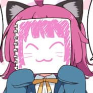

Popis projektu
Tento projekt vznikl jakožto týmová a ročníková práce dvou studentů, Marka Mouchy a Lukáše Jelínka. Naší snahou je zde vysvětlit problematiku železničních návěstidel širší veřejnosti. Taktéž zde máme test na návěstidla, kde se vám zobrazí náhodná návěst a vaším úkolem je tuto návěst poznat, ale i část, kde si můžete na "zkušebním návěstidle" vytvořit vámi viděnou zajímavou návěst a zjistit, jaký taková návěst má význam.
Autoři projektu
Marek Moucha
Jsem studentem oboru IT, zaměřením grafik v třetím ročníku střední školy. Tvorba webových stránek je pro mě zábava, stejně tak jako můj koníček motající se okolo železnice. Když jsem se mohl domluvit na tomto tématu týmové práce, tak jsem neváhal, jelikož jsem věděl, že mě toto bude bavit.

Lukáš Jelínek
Jsem studentem třetího ročníků střední školy. Na tomto projektu jsem se podílel jakožto programátor.